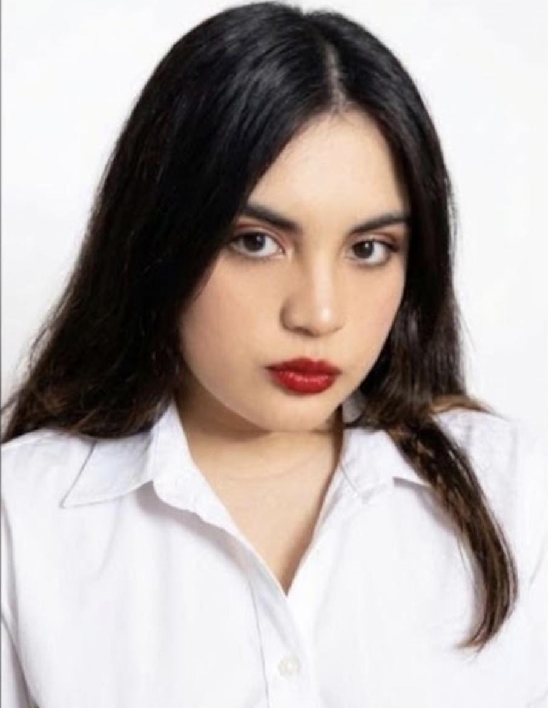
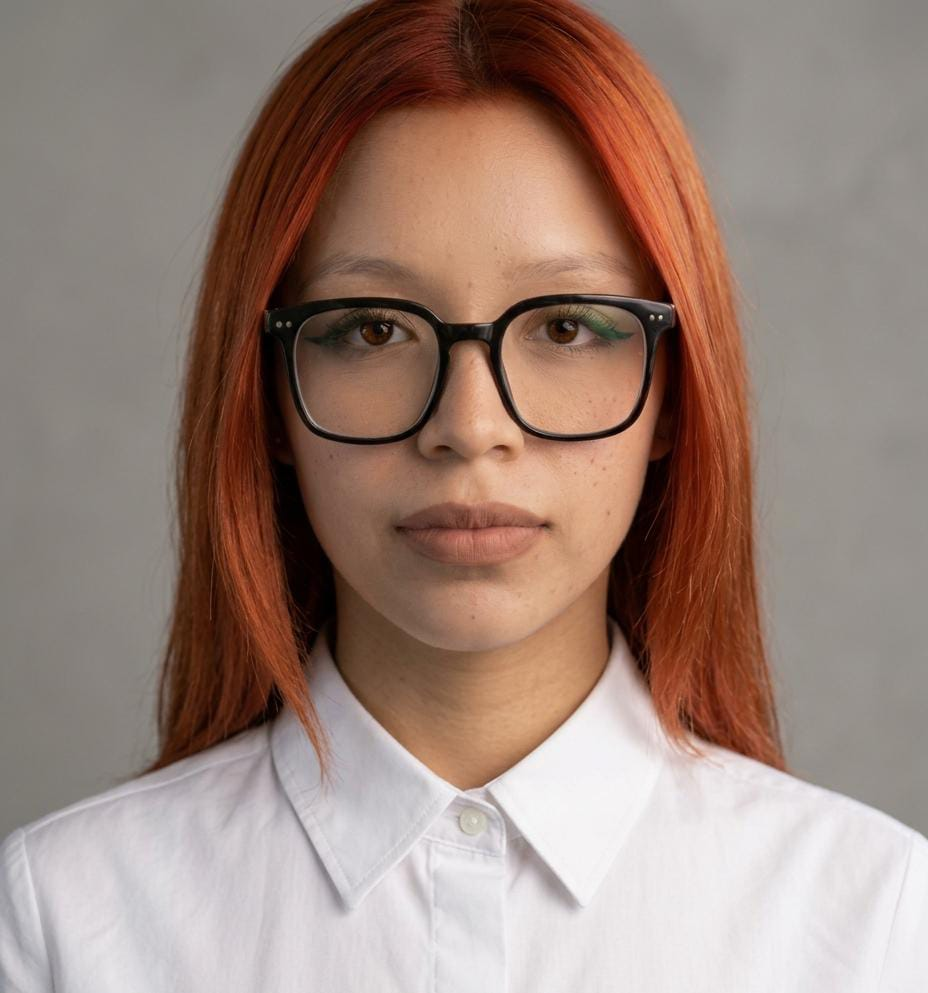
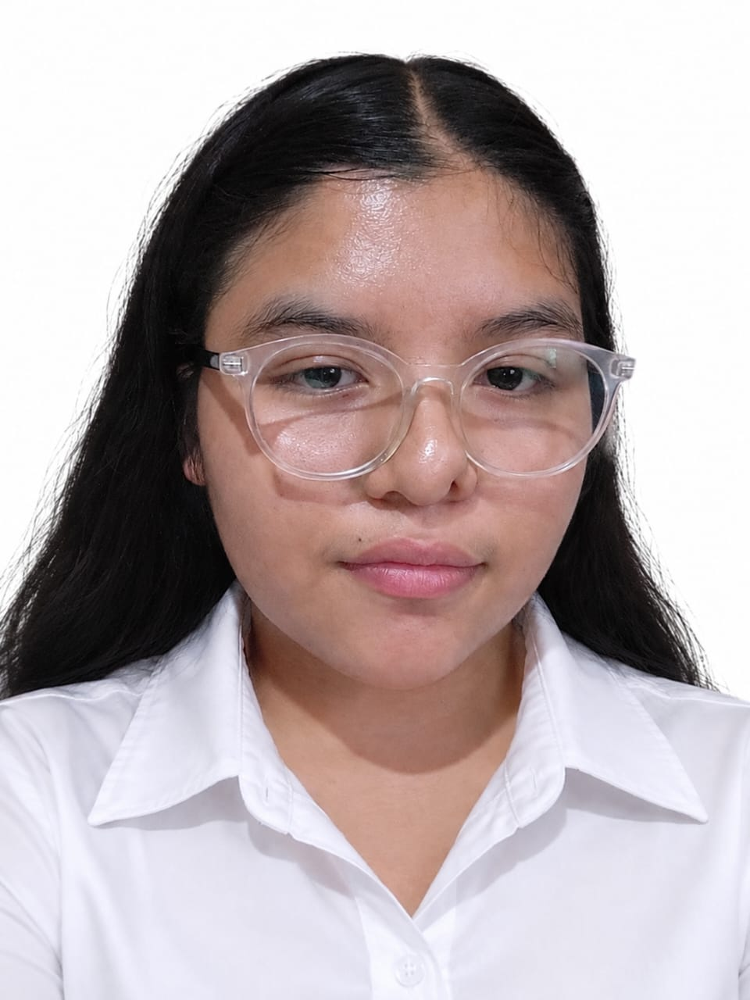
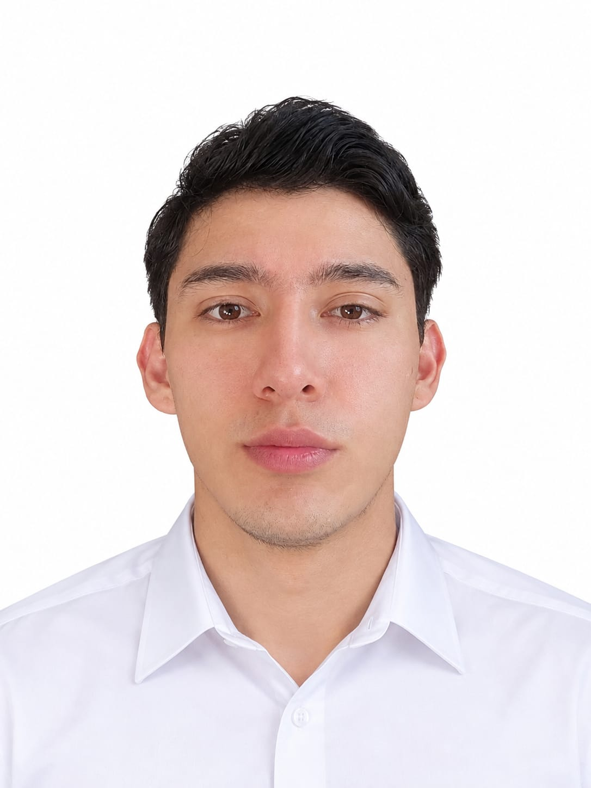

Mia Sinai Cruz Velazco
Director de campaña
Un liderazgo comprometido con el futuro de nuestra comunidad.
Como director de campaña, mi compromiso es guiarnos hacia un proyecto incluyente, transparente y transformador. Construimos esta propuesta escuchando la voz de cada persona, convirtiendo las necesidades reales en acciones concretas y propuestas sólidas. Creemos firmemente que el cambio se logra en equipo, y este sitio es el punto de encuentro para informarte, sumarte y construir juntos el futuro que merecemos.

Pamela Careaga Quiroz
Director de marketing
Estrategia y comunicación al servicio de nuestra propuesta.
Como Director de Marketing de esta campaña, mi labor es garantizar que nuestra visión, valores y propuestas lleguen de forma clara, cercana y honesta a cada rincón de la comunidad. A través de una estrategia de comunicación integral y basada en las verdaderas necesidades de la gente, conectamos con los ciudadanos para construir un diálogo transparente y generar un impacto real que movilice al cambio.

Laura Cohetzaltitla Popoca
Director de propuestas
Coordinación, precisión y respaldo operativo en todo el territorio
Encargado de la planificación operativa, montaje de eventos, gestión de recursos y logística de movilización. Mi compromiso es asegurar que cada encuentro con la gente se desarrolle con total orden, puntualidad y eficiencia. ¡La fuerza de una campaña también se demuestra en su organización!.

Emiliano Aguilar Gonzalez
Director de campo
En el territorio, escuchando y construyendo desde las calles
Como Director de Campo, mi responsabilidad es llevar nuestro mensaje directamente a cada hogar, colonia y comunidad. Creemos que una campaña real se construye caminando el territorio, mirando a la gente a los ojos y escuchando de primera mano sus necesidades. Coordinamos a nuestro equipo con disciplina y pasión para asegurar que la voz de cada ciudadano esté presente en el corazón de este proyecto..